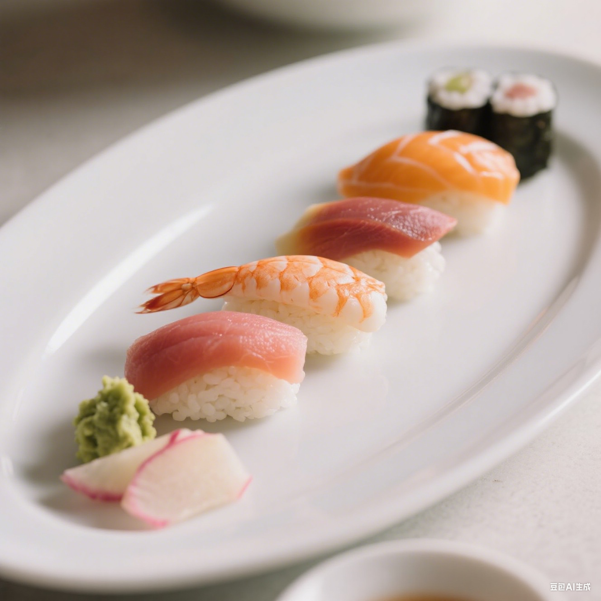
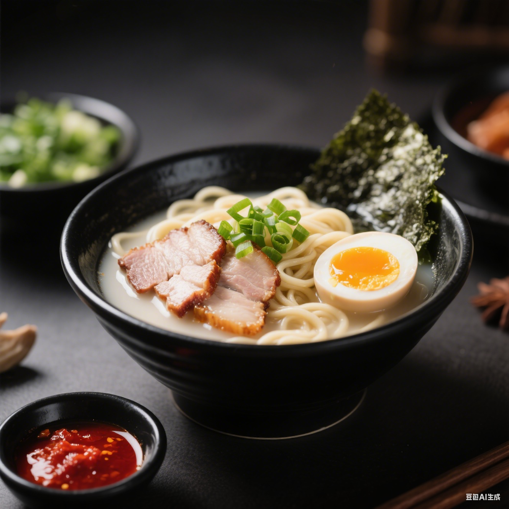
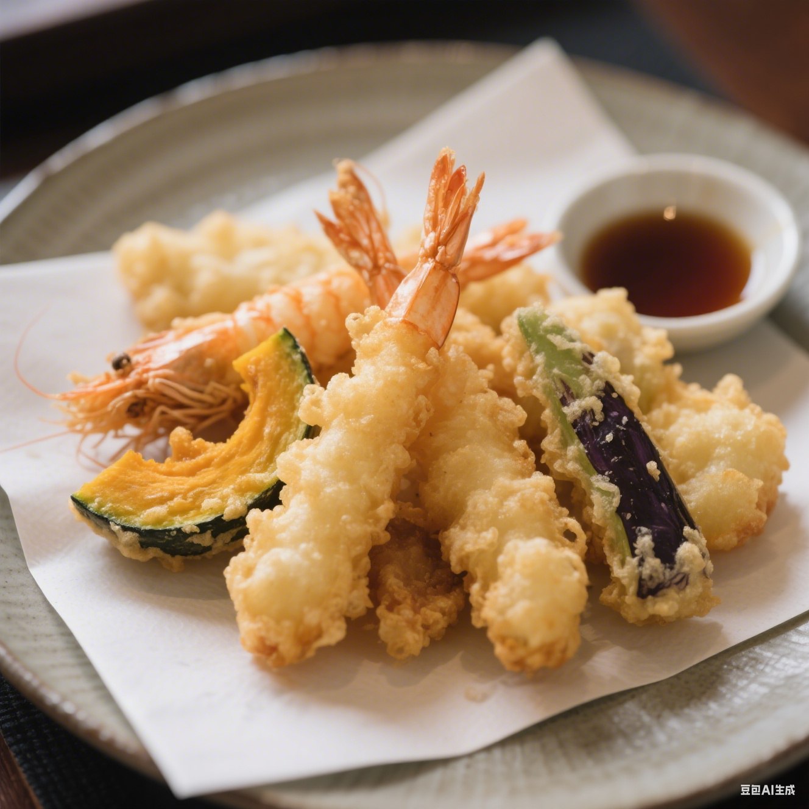
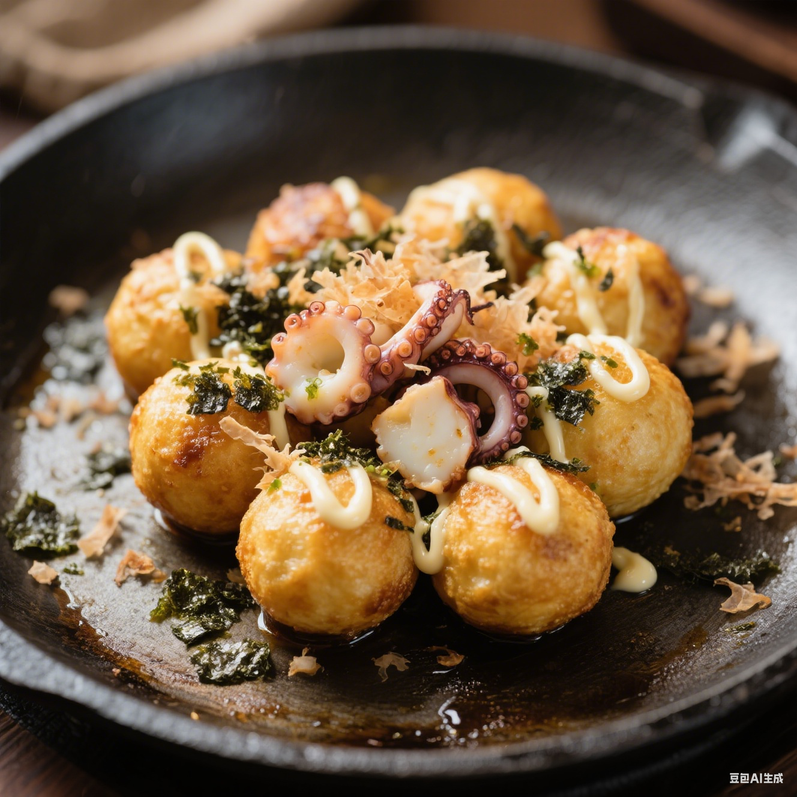

美食

推荐指数：⭐⭐⭐⭐⭐
寿司拼盘
多种新鲜鱼片铺在颗粒分明的醋饭上，搭配芥末与姜片，口感丰富层次分明
- 东京
- 2500 日元 / 份

推荐指数：⭐⭐⭐⭐⭐
拉面
劲道面条浸在乳白豚骨汤中，叉烧软嫩溏心蛋流心，海苔葱花增添香气
- 东京
- 1600 日元 / 份

推荐指数：⭐⭐⭐⭐
天妇罗
外皮金黄酥脆不油腻，内里食材鲜嫩多汁，蘸天汁食用更显清甜
- 东京
- 2000 日元 / 份

推荐指数：⭐⭐⭐
章鱼小丸子
外焦里嫩，章鱼块 Q 弹，海苔木鱼花随热气舞动，沙拉酱酸甜可口
- 东京
- 1100 日元 / 份